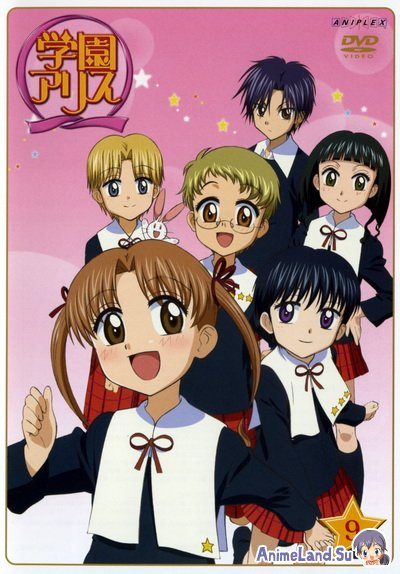

Японское название: Gakuen Alice Cap
Русское название: ???????
Число серий: ТВ (26 эп.), 25 мин.
Жанр:Прыключение
Создатели:Oomori Такахиро
Оценка:???
Год выпуска: 2000-2004

Описание аниме: Mikan и Хотару лучшие друзья вырос в маленьком сельском городке в размерах.
Городские школы должны были быть переданы Firefly Но вдруг.
Флуоресцентный оранжевый-шаг "Алиса академия" достичь. Однако, есть таинственная сила (Алиса) был единственным владельцем ... поставил специальную школу.
Назад